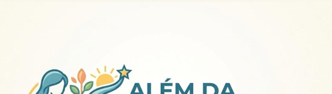

PROJETO DE EXTENSÃO
ALÉM DA MATERNIDADE
Valorizando talentos e apoiando o retorno profissional
Uma reflexão para você
“
”
A maternidade transforma caminhos, mas não apaga talentos.

PROJETO DE EXTENSÃO
Valorizando talentos e apoiando o retorno profissional
Uma reflexão para você
A maternidade transforma caminhos, mas não apaga talentos.